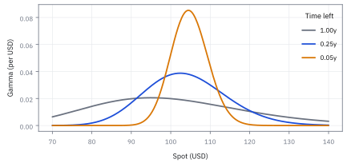
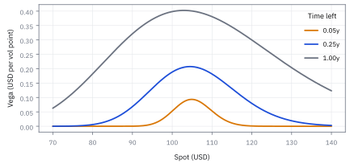
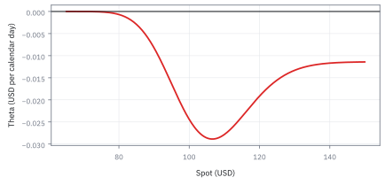
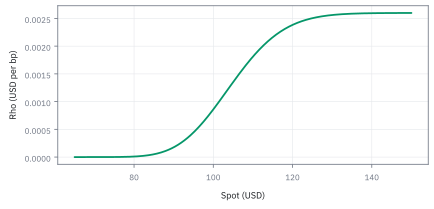
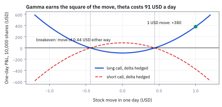
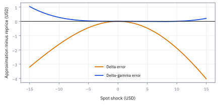

14.3 The Greeks
Greeks คืออนุพันธ์ของสูตร Black–Scholes เทียบราคาหุ้น เวลา ความผันผวน และดอกเบี้ย ใช้บอกว่าพอร์ตได้เสียเท่าไรเมื่อแต่ละอย่างขยับนิดหนึ่ง
คุณขาย call 100 สัญญา (10,000 หุ้นอ้างอิง) บนหุ้น \$35 strike \$36 อายุ 3 เดือน ที่ \$1.3154 ต่อหุ้น (ตัวอย่างที่สองของ 14.2) รับ premium \$13,154 ก่อนตลาดเปิดหัวหน้าถามสี่ข้อ: ต้องถือหุ้นกี่หุ้น ถ้าความผันผวนในตลาดขึ้น 1 จุดเสียเท่าไร ถ้าวันนี้หุ้นนิ่งได้เท่าไร และหุ้นต้องแกว่งวันละเท่าไรจึงเริ่มขาดทุน เพื่อนร่วมโต๊ะตอบข้อสามทันทีว่า “premium ละลายหมดใน 91.25 วัน ก็วันละ \$144” ถูกไหม?
ลองตอบก่อนเปิดเฉลย
ซื้อหุ้น 4,471 หุ้น ความผันผวนขึ้น 1 จุดเสีย \$692 วันนี้ถ้าหุ้นนิ่งได้ \$98.85 ไม่ใช่ \$144 เพราะค่าเวลาไม่ได้ละลายเป็นเส้นตรง ถ้าหุ้นอยู่ที่ \$35 ตลอด ตอนเหลือ 5 วันจะละลายวันละ \$246 และเมื่อ hedge แล้ว คุณเริ่มขาดทุนเมื่อหุ้นแกว่งเกินวันละ ±\$0.44 หรือ 1.26% ซึ่งคือความผันผวน 24% ต่อปีแปลงเป็นรายวันพอดี หน้านี้สร้างตัวเลขทั้งสี่ขึ้นมาทีละขั้น
สิ่งที่เราจะสร้าง
14.2 ให้สูตรราคา แต่โต๊ะ option ไม่ได้ถามแค่ราคา มันถามว่า “ถ้าหุ้นขยับ \$1 ถ้าความผันผวนขยับ 1 จุด ถ้าผ่านไปหนึ่งวัน พอร์ตได้เสียเท่าไร” คำตอบคืออนุพันธ์ย่อยของสูตรเทียบแต่ละตัวแปร เรียกรวมกันว่า Greeks 14.1 ใช้ไปแล้วสามตัว คือ $C_S$, $C_{SS}$ และ $C_t$ หน้านี้หาครบทั้งห้าตัวด้วยสูตร
เริ่มจากการขยับราคาหุ้นแล้วคำนวณใหม่ ซึ่งใช้ได้กับสัญญาทุกแบบ แล้วเตรียมเอกลักษณ์หนึ่งบรรทัดที่ทำให้อนุพันธ์ยุบลงเหลือสั้น ๆ derive delta, gamma, vega, theta และ rho แทนตัวเลขของ call \$36 แปลงเป็นเงินของตำแหน่ง 100 สัญญา ตรวจทุกตัวพร้อมกันด้วย PDE หาจุดเท่าทุนรายวัน แล้วดูว่าการประมาณด้วย Greeks พังเมื่อไร
ศัพท์ที่ใช้ในหัวข้อนี้
- Greeks
- อนุพันธ์ย่อยของราคา option เทียบราคาหุ้น (delta, gamma) ความผันผวน (vega) เวลา (theta) และดอกเบี้ย (rho) ใช้ตอบว่าพอร์ตได้เสียเท่าไรเมื่อสิ่งหนึ่งขยับนิดหนึ่ง โดยไม่ต้องคำนวณราคาใหม่ทุกสัญญา ชื่อมาจากธรรมเนียมโต๊ะเทรด vega เองไม่ใช่อักษรกรีกด้วยซ้ำ
- Bump-and-revalue
- ขยับ input ทีละนิดแล้วคำนวณราคาใหม่ เอาผลต่างหารด้วยขนาดที่ขยับ ใช้หา Greeks ของสัญญาที่ไม่มีสูตรปิด และใช้ตรวจสูตรที่ derive มา
- หน่วยของโต๊ะ
- vega รายงานต่อความผันผวน 1 จุด (0.01) theta ต่อหนึ่งวันปฏิทิน (1/365 ปี) และ rho ต่อ 1 basis point (0.0001) หรือต่อ 1% ตัวเลขดิบจากสูตรเป็นต่อ 1.00 เต็ม ใหญ่เกินจริงจนใช้ตรง ๆ ไม่ได้
- Position Greek
- Greek ต่อหุ้นคูณจำนวนหุ้นอ้างอิงพร้อมเครื่องหมาย (ซื้อเป็นบวก ขายเป็นลบ) ขาย 100 สัญญา สัญญาละ 100 หุ้น คือ −10,000 ใช้บวกความเสี่ยงข้ามทุกสัญญาในพอร์ต
- Dollar delta และ dollar gamma
- delta คูณราคาหุ้น และครึ่งหนึ่งของ gamma คูณกำลังสองของราคาหุ้น ใช้คูณกับผลตอบแทนเป็นเปอร์เซ็นต์ได้ตรง ๆ เวลาระบบความเสี่ยงถามว่า “หุ้นขยับ 2% พอร์ตได้เสียเท่าไร”
- Realized กับ implied volatility
- realized คือความผันผวนที่หุ้นแกว่งจริงระหว่างทาง implied คือค่าที่ใส่ในสูตรแล้วได้ราคาตลาด (14.4) คนที่ hedge option ไว้ได้หรือเสียตามว่าค่าแรกสูงหรือต่ำกว่าค่าหลัง
สัญลักษณ์และหน่วย
| สัญลักษณ์ | ความหมาย | หน่วย |
|---|---|---|
| $S,\ K$ | ราคาหุ้นวันนี้ และ strike | USD |
| $\tau=T-t$ | เวลาที่เหลือ วันนี้ $t=0$ จึง $\tau=T$ | ปี |
| $r,\ \sigma$ | ดอกเบี้ยต่อเนื่อง และความผันผวน | ต่อปี, ต่อรากที่สองของปี |
| $C,\ d_1,\ d_2$ | ราคา call และระยะสองตัวของ 14.2 | USD, ไม่มีหน่วย |
| $\Phi,\ \phi$ | CDF และ density ของ standard Normal | ไม่มีหน่วย |
| $\Delta,\ \Gamma$ | $\partial C/\partial S$ และ $\partial^2C/\partial S^2$ | หุ้นต่อ call, ต่อ USD |
| $\nu,\ \Theta,\ \rho$ | $\partial C/\partial\sigma$, $\partial C/\partial t$ และ $\partial C/\partial r$ แบบดิบ | USD ต่อ 1.00, USD ต่อปี, USD ต่อ 1.00 |
| $N$ | จำนวนหุ้นอ้างอิงของตำแหน่งพร้อมเครื่องหมาย | หุ้น |
| $h,\ \delta\sigma,\ \delta t,\ \delta r$ | ขนาดที่ราคาหุ้น ความผันผวน เวลา และดอกเบี้ยขยับ | USD, ต่อปี, ปี, ต่อปี |
ขั้นที่ 1 — ลองด้วยมือ: ขยับหุ้นทีละ \$1 แล้วคำนวณใหม่
โจทย์ให้อะไรมาบ้าง: call \$105 ของ 14.2 (หุ้น \$100, 0.25 ปี, 4%, 20%) ถามคำถามของ Greek ตรง ๆ โดยยังไม่ใช้อนุพันธ์: หุ้นขยับ \$1 ราคาเปลี่ยนเท่าไร และความชันนั้นเองเปลี่ยนเท่าไร ใช้สูตรของ 14.2 คำนวณราคาที่ \$99, \$100 และ \$101
คำตอบ: หุ้นขยับ \$1 call ขยับราว \$0.3679 และความชันเปลี่ยนราว 0.0377 ต่อ \$1 สองตัวนี้คือ delta กับ gamma แบบที่ขยับทีละ \$1 สูตรในขั้นที่ 3 และ 4 จะให้ 0.367719 และ 0.037681 ต่างกันที่ทศนิยมตำแหน่งที่สี่ เพราะ \$1 ยังไม่เล็กพอ
ตรวจเองใน 10 วินาที: $2.777570-2.041834=0.735736$ หารสองได้ 0.367868 วิธีนี้ใช้ได้กับสัญญาทุกแบบแม้ไม่มีสูตร ต้นทุนคือต้องคำนวณราคาใหม่สามครั้งต่อ Greek หนึ่งตัว ซึ่งช้าเมื่อพอร์ตมีหลายพันสัญญา
ขั้นที่ 2 — เอกลักษณ์หนึ่งบรรทัดที่ทำให้อนุพันธ์ยุบ
หาอนุพันธ์ของ $C=S\Phi(d_1)-Ke^{-r\tau}\Phi(d_2)$ ตรง ๆ จะมีพจน์ $\phi(d_1)$ และ $\phi(d_2)$ โผล่มาทุกครั้ง เพราะ $d_1, d_2$ ขึ้นกับทุกตัวแปร ขั้นนี้พิสูจน์ว่าสองก้อนที่คูณ $\phi$ อยู่เท่ากันเสมอ ซึ่งทำให้พจน์ยุ่ง ๆ หักกันในทุกขั้นถัดไป วิธีคือหาร density สองตัว แล้วใช้ $d_1=d_2+\sigma\sqrt\tau$
บรรทัดที่สี่แทน $d_2\sigma\sqrt\tau$ ด้วยตัวเศษของ $d_2$ จาก 14.2 แล้วพจน์ $\sigma^2\tau$ หักกันพอดี ตัวเลขตรวจได้กับ call \$105: $100\,\phi(-0.337902)=100(0.376805)=37.6805$ และ $103.955233\,\phi(-0.437902)=103.955233(0.362469)=37.6805$
อีกข้อที่ใช้ทุกขั้นคือ $d_1-d_2=\sigma\sqrt\tau$ ไม่มี $S$ และไม่มี $r$ อยู่เลย อนุพันธ์ของ $d_1$ กับ $d_2$ เทียบ $S$ หรือ $r$ จึงเท่ากันเสมอ ส่วนเทียบ $\sigma$ ต่างกัน $\sqrt\tau$ และเทียบ $\tau$ ต่างกัน $\sigma/(2\sqrt\tau)$
ขั้นที่ 3 — delta: ความชันเหลือแค่ Φ(d₁)
14.2 บอกว่าพอร์ตเลียนแบบถือหุ้น $\Phi(d_1)$ หุ้น และ 14.1 บอกว่าจำนวนหุ้นต้องเท่ากับความชัน $C_S$ ขั้นนี้พิสูจน์ว่าสองอย่างตรงกันจริง ใช้กฎลูกโซ่กับทั้งสองพจน์ เพราะ $d_1$ และ $d_2$ ขึ้นกับ $S$
บรรทัดแรกมาจากตัวเศษของ $d_1$ ที่มี $S$ อยู่ใน $\ln S$ ตัวเดียว อนุพันธ์คือ $1/S$ หารด้วยตัวส่วน $\sigma\sqrt\tau$ เศษของบรรทัดที่สี่เป็นศูนย์ตามเอกลักษณ์ของขั้นที่ 2 เหลือพจน์แรกเปล่า ๆ
ผลนี้ไม่ใช่เรื่องบังเอิญ สูตรราคาสร้างมาจากพอร์ตเลียนแบบ ถ้าความชันไม่เท่ากับจำนวนหุ้นที่พอร์ตถือ พอร์ตก็เลียนแบบ call ไม่ได้ตั้งแต่แรก delta ของ call จึงอยู่ระหว่าง 0 ถึง 1 เสมอ และอ่านเป็นจำนวนหุ้นที่ต้องถือต่อ call หนึ่งใบได้ทันที
Figure 14.3a — delta เทียบราคาหุ้น ที่อายุเหลือสามแบบ

ขั้นที่ 4 — gamma และ vega: มาจาก φ(d₁) ก้อนเดียวกัน
gamma คืออนุพันธ์ของ delta อีกครั้ง ส่วน vega คืออนุพันธ์ของราคาเทียบ $\sigma$ ซึ่งคราวนี้ทั้งสองพจน์ยังอยู่ แต่เอกลักษณ์ของขั้นที่ 2 ยุบให้เหลือพจน์เดียว บรรทัดสุดท้ายผูกสองตัวเข้าด้วยกัน
บรรทัดที่ห้าแทน $Ke^{-r\tau}\phi(d_2)$ ด้วย $S\phi(d_1)$ ตามขั้นที่ 2 วงเล็บคืออนุพันธ์ของ $d_1-d_2=\sigma\sqrt\tau$ เทียบ $\sigma$ ซึ่งคือ $\sqrt\tau$ บรรทัดสุดท้ายได้จากการหาร $\nu$ ด้วย $\Gamma$: $S\phi\sqrt\tau\big/\big(\phi/(S\sigma\sqrt\tau)\big)=S^2\sigma\tau$
ความหมายของบรรทัดสุดท้าย: option ที่โค้งมาก ก็ไวต่อความผันผวนมากด้วยเสมอ เพราะมาจากความสูงของระฆังที่ $d_1$ ก้อนเดียวกัน ทั้งคู่สูงสุดเมื่อหุ้นอยู่ใกล้ strike ที่ $\phi(d_1)$ ใกล้ยอดระฆัง $1/\sqrt{2\pi}\approx0.3989$
Figure 14.3b — gamma กระจุกรอบ strike เมื่อใกล้หมดอายุ

Figure 14.3c — vega ต่อความผันผวน 1 จุด

ขั้นที่ 5 — theta และ rho
theta วัดตามเวลาปฏิทิน $t$ ซึ่งเดินสวนกับเวลาที่เหลือ $\tau$ จึงเป็น $-\partial C/\partial\tau$ เวลากระทบราคาสองทาง คือผ่านความกว้างของ distribution และผ่านการคิดลด strike ส่วน rho มีดอกเบี้ยอยู่ในการคิดลดกับใน $d$ แต่พจน์ใน $d$ หักกันเพราะ $d_1-d_2$ ไม่มี $r$
บรรทัดที่สี่ใช้เอกลักษณ์ของขั้นที่ 2 จับพจน์ $\phi$ สองก้อนเข้าคู่ แล้วใช้ $\partial(\sigma\sqrt\tau)/\partial\tau=\sigma/(2\sqrt\tau)$ theta จึงมีสองก้อน ก้อนแรกคือค่าความผันผวนที่ละลายไปเมื่อเวลาเหลือน้อยลง ก้อนที่สองคือดอกเบี้ยของ strike ที่ยังไม่ต้องจ่าย สำหรับ call ทั้งคู่ติดลบ
rho เป็นบวก เพราะดอกเบี้ยสูงขึ้นทำให้มูลค่าวันนี้ของ strike ที่ต้องจ่ายในอนาคตถูกลง และมี $\tau$ คูณอยู่ตรง ๆ option อายุสั้นจึงแทบไม่ไวต่อดอกเบี้ย
Figure 14.3d — theta ต่อวันปฏิทิน เทียบราคาหุ้น

Figure 14.3e — rho ต่อ 1 basis point

ขั้นที่ 6 — แทนตัวเลขของ call \$36 บนหุ้น \$35
โจทย์ให้อะไรมาบ้าง: $S=35$, $K=36$, $\tau=0.25$, $r=0.02$, $\sigma=0.24$ และจาก 14.2 ขั้นที่ 12: $d_1=-0.1330906$, $d_2=-0.2530906$, $\Phi(d_1)=0.4470608$, $\Phi(d_2)=0.4000991$, $Ke^{-r\tau}=35.820449$, $C=1.315401$ Greek สามในห้าตัวต้องใช้ความสูงของระฆังที่ $d_1$ จึงหาตัวนี้ก่อน
คำตอบ: ต่อ call หนึ่งใบ: delta 0.4471, gamma 0.0941 ต่อ \$, vega 6.9199 ต่อความผันผวน 1.00, theta −3.6082 ต่อปี และ rho 3.5829 ต่อดอกเบี้ย 1.00 ตรวจด้วยการคำนวณราคาใหม่ทั้งสูตร: หุ้นขึ้นเป็น \$36 ราคาขึ้น 0.493966 (ทำนายด้วย $\Delta+\tfrac12\Gamma$ ได้ 0.494135) ความผันผวน 25% ราคาขึ้น 0.069246 (ทำนาย $0.01\nu=0.069199$) และผ่านไปหนึ่งวันราคาลด 0.009909 (ทำนาย $\Theta/365=0.009885$)
ตรวจเองใน 10 วินาที: $d_1$ อยู่ใกล้ศูนย์ $\phi(d_1)$ จึงเกือบเท่ายอดระฆัง 0.4 สูตรในหัว $\Gamma\approx0.4/(S\sigma\sqrt\tau)=0.4/4.2=0.095$ และ $\nu\approx0.4\,S\sqrt\tau=0.4(35)(0.5)=7.0$ ใกล้ค่าจริง 0.0941 และ 6.92
ขั้นที่ 7 — แปลงเป็นเงินของตำแหน่งขาย 100 สัญญา
โจทย์ให้อะไรมาบ้าง: Greek ต่อหุ้นจากขั้นที่ 6 ตำแหน่งขาย 100 สัญญา สัญญาละ 100 หุ้น จึง $N=-10{,}000$ ขนาดการขยับที่โต๊ะใช้คือความผันผวน 1 จุด ($0.01$) หนึ่งวันปฏิทิน ($1/365$ ปี) และดอกเบี้ย 1% ($0.01$) หรือ 1 bp ($0.0001$)
คำตอบ: ตำแหน่งนี้เหมือนขายหุ้นไว้ 4,471 หุ้น จึงต้องซื้อหุ้นจริง 4,471 หุ้น (\$156,471) ให้ delta รวมเป็นศูนย์ หุ้นขยับ \$1 delta ของตำแหน่งเปลี่ยน 941 หุ้น ความผันผวนขึ้น 1 จุดเสีย \$692 วันที่ทุกอย่างนิ่งได้ \$98.85 และดอกเบี้ยขึ้น 1% เสีย \$358 ถ้าความผันผวนกระโดดจาก 24% เป็น 30% vega ทำนายว่าเสีย $6(692)=\$4{,}152$ คำนวณใหม่ทั้งสูตรได้ \$4,165 มากกว่าเล็กน้อย เพราะ vega เองโตขึ้นเป็น 6.96 ที่ 30%
ตรวจเองใน 10 วินาที: theta \$98.85 ไม่ใช่ \$13,154/91.25 = \$144.15 ตารางข้างล่างคำนวณใหม่ทั้งสูตรโดยให้หุ้นอยู่ที่ \$35 ตลอด ค่าเวลาละลายเร็วขึ้นเรื่อย ๆ จนเหลือราว 5 วัน แล้วช้าลงเพราะ call ที่ต่ำกว่า strike เหลือค่าน้อยจนไม่มีอะไรให้ละลาย ค่าเฉลี่ยตลอดอายุจึงสูงกว่าวันแรก
| วันที่เหลือ | มูลค่า 10,000 call (USD) | theta ของผู้ขาย (USD ต่อวัน) |
|---|---|---|
| 91.25 | 13,154 | 98.85 |
| 60 | 9,790 | 118.30 |
| 30 | 5,745 | 157.19 |
| 10 | 2,030 | 225.44 |
| 5 | 841 | 245.96 |
| 2 | 154 | 181.75 |
| 1 | 20 | 72.91 |
ขั้นที่ 8 — ตรวจทุกตัวพร้อมกันด้วย PDE
Greeks ที่ถูกต้องต้องทำให้ PDE ของ 14.1 เป็นจริง นี่คือการตรวจที่จับได้ทั้งเครื่องหมายผิดและหน่วยผิดในคราวเดียว แทนสูตรของขั้นที่ 4 และ 5 ลงไปจะเห็นว่า PDE แยกเป็นสองคู่ที่หักกันพอดี
สามบรรทัดแรกคือการตรวจ: ผลรวมตรงกับ $rC$ ทุกหลักที่แสดง บรรทัดที่สี่และห้าบอกว่าพจน์ความโค้งเท่ากับก้อนแรกของ theta พอดีแต่คนละเครื่องหมาย (3.321567 ทั้งคู่)
บรรทัดสุดท้ายบอกว่าพจน์ carry ของหุ้นบวกก้อนดอกเบี้ยของ theta ได้ $rC$ ตามนิยามของราคา ประโยคที่โต๊ะพูดกันว่า “theta คือค่าเช่าของ gamma” คือคู่แรกนี้
ขั้นที่ 9 — หุ้นต้องแกว่งเท่าไร gamma จึงคุ้มค่าเวลา
คนขาย call ที่ hedge ไว้ ถือ $-C+\Delta S$ กับเงินสด $B=C-\Delta S$ ในหนึ่งวัน $\delta t=1/365$ ที่หุ้นขยับ $x$ ดอลลาร์ ราคา call ขยับตาม Taylor ถึงอันดับสองในราคาหุ้น แล้วใช้ PDE ของขั้นที่ 8 แทน $-\Theta+r(C-S\Delta)$
บรรทัดที่สามคือหัวใจของการเทรด option: ขาหุ้นหักส่วน $\Delta x$ ทิ้ง และดอกเบี้ยของเงินกู้หักก้อนดอกเบี้ยของ theta ทิ้ง เหลือแค่การแข่งกันระหว่างความผันผวนที่อยู่ในราคา ($\sigma^2S^2\delta t$) กับการขยับจริงยกกำลังสอง ($x^2$) ไม่มีทิศทางของหุ้นอยู่เลย
จุดเท่าทุน \$0.4397 คือ 1.256% ของ \$35 เท่ากับ $24\%/\sqrt{365}$ พอดี วันที่หุ้นนิ่ง ผู้ขายได้ \$91.00 ไม่ใช่ \$98.85 เพราะอีก \$7.85 เป็นดอกเบี้ยของเงินที่กู้มาซื้อหุ้น 4,471 หุ้น
Figure 14.3f — กำไรขาดทุนหนึ่งวันของ call ที่ hedge แล้ว

ขั้นที่ 10 — ประมาณกำไรขาดทุนด้วย Greeks แล้วดูว่าใช้ได้ไกลแค่ไหน
ระบบความเสี่ยงไม่คำนวณราคาใหม่ทุกสัญญาทุกครั้งที่ตลาดขยับ มันใช้การกระจาย Taylor รอบจุดปัจจุบันซึ่งเรากำหนดเอง: เก็บอันดับสองเฉพาะราคาหุ้นซึ่งขยับแรงที่สุด และอันดับหนึ่งของตัวแปรอื่น บรรทัดแรกเป็นนิยามของการประมาณนี้ ไม่ใช่สมการที่จริงเป๊ะ ทดสอบกับ call \$105 เมื่อหุ้นขึ้น \$1
ที่ \$1 การประมาณด้วย delta อย่างเดียวพลาด 0.0190 ส่วนเพิ่ม gamma พลาดแค่ 0.000134 ต่อหุ้น สิ่งที่ทิ้งไปคือพจน์อันดับสามขึ้นไป และพจน์ไขว้เช่นหุ้นกับความผันผวนขยับพร้อมกัน ซึ่งจะโผล่กลับมาเป็นความคลาดเคลื่อนเมื่อขยับไกล Figure 14.3g แสดงว่าไกลแค่ไหน
Figure 14.3g — การประมาณด้วย delta และ delta-gamma เทียบการคำนวณใหม่

ขั้นที่ 11 — ถามเป็นเปอร์เซ็นต์: dollar delta และ dollar gamma
โจทย์ให้อะไรมาบ้าง: ระบบความเสี่ยงถามว่า “หุ้นขยับ 2% พอร์ตได้เสียเท่าไร” ใช้ตำแหน่งขาย 10,000 call ที่ยังไม่ hedge เขียน $h=S\cdot(h/S)$ ในสองพจน์แรกของขั้นที่ 10 แล้วรวมตัวคูณไว้เป็นตัวเลขเงินสองตัว
คำตอบ: หุ้นขึ้น 2% เสีย \$3,360 หุ้นลง 2% ได้ \$2,899 ไม่สมมาตร เพราะ gamma ติดลบกินทั้งสองทาง คำนวณราคาใหม่ทั้งสูตรได้ −\$3,359.73 และ +\$2,899.47 ตรงกันถึงหลักหน่วย สองตัวเลขเงินนี้บวกข้ามทุกหุ้นในพอร์ตได้ เพราะหน่วยเป็น USD ต่อผลตอบแทนเหมือนกัน
ตรวจเองใน 10 วินาที: ที่ ±10% การประมาณเริ่มพลาดเป็นหลักร้อย: หุ้นขึ้น 10% ประมาณ −\$21,414 แต่ของจริง −\$21,137 หุ้นลง 10% ประมาณ +\$9,881 แต่ของจริง +\$10,230 วันที่ตลาดขยับแรงจึงต้องใช้ตารางในขั้นถัดไป
ขั้นที่ 12 — ตาราง scenario: หุ้นกับความผันผวนขยับพร้อมกัน
โจทย์ให้อะไรมาบ้าง: ตำแหน่งขาย 10,000 call ที่ซื้อหุ้น 4,471 หุ้น hedge แล้ว แทนการบวก Greek ทีละตัว คำนวณราคาใหม่ทั้งสูตรทุกคู่ของหุ้นขยับทันที −5%, 0 และ +5% กับความผันผวนใหม่ 22%, 24% และ 26% ช่องละคือกำไรขาดทุนเป็น USD
| หุ้น \ ความผันผวน | 22% | 24% | 26% |
|---|---|---|---|
| −5% | −304 | −1,419 | −2,569 |
| 0% | +1,382 | 0 | −1,386 |
| +5% | −14 | −1,424 | −2,838 |
คำตอบ: แถวกลางคือ vega ล้วน ความผันผวนลด 2 จุดได้ \$1,382 เพิ่ม 2 จุดเสีย \$1,386 ใกล้ $2\times\$692$ คอลัมน์กลางคือ gamma ล้วน หุ้นขยับ 5% ทางไหนก็เสียราว \$1,420 มุมขวาล่างคือวันที่แย่ที่สุด หุ้นขึ้น 5% พร้อมความผันผวนขึ้น 2 จุด เสีย \$2,838 แม้ hedge delta ไว้แล้ว เพราะ gamma ติดลบกับ vega ติดลบทำงานพร้อมกัน
ตรวจเองใน 10 วินาที: คอลัมน์กลางด้วยสูตรขั้นที่ 9: $\tfrac12\Gamma x^2$ ที่ $x=1.75$ คือ $0.047074(3.0625)=0.1442$ ต่อหุ้น หรือ \$1,442 ทั้งตำแหน่ง ใกล้ \$1,419 และ \$1,424 ที่คำนวณใหม่ ส่วนต่างเล็ก ๆ มาจาก gamma ที่เปลี่ยนระหว่างทาง
คำถามที่ควรถามออกมาดัง ๆ
ทำไม delta ออกมาเป็น $\Phi(d_1)$ เฉย ๆ ทั้งที่ $d$ อยู่ในทุกพจน์? เพราะเอกลักษณ์ของขั้นที่ 2 ทำให้พจน์ที่มาจากการขยับของ $d_1$ กับ $d_2$ หักกันพอดี และเบื้องหลังคือสูตรมาจากพอร์ตเลียนแบบ ความชันจึงต้องเท่ากับจำนวนหุ้นที่พอร์ตถือ
ทำไม gamma กับ vega มาคู่กันเสมอ? เพราะ $\nu=\Gamma S^2\sigma\tau$ option ตัวเดียวที่ถือ gamma บวกก็ถือ vega บวกเสมอ จะมี gamma โดยไม่มี vega ต้องผสม option หลายอายุ เช่น calendar spread ของ 14.6 ซึ่ง gamma มาจากอายุสั้นเป็นหลัก ส่วน vega มาจากอายุยาวเป็นหลัก
theta ต่อวันต้องหาร 365 หรือ 252? ใช้นาฬิกาเดียวกับที่ใช้วัดความผันผวน หน้านี้ใช้วันปฏิทินทั้งคู่ จุดเท่าทุนในขั้นที่ 9 จึงปิดพอดี ถ้าใช้ความผันผวนแบบ 252 วัน ต้องนับเฉพาะวันทำการทั้งสองฝั่ง แบบเดียวกับกับดักในขั้นที่ 9 ของ 14.1
ความผิดที่ให้ตัวเลขผิดโดยไม่มีอะไรเตือน
สลับ $\Phi$ กับ $\phi$: ใน spreadsheet function เดียวกันให้ได้ทั้งสองตัว ต่างกันแค่ argument ตัวท้าย ใส่ผิดแล้ว gamma จะเป็น $0.447061/4.2=0.1064$ แทน 0.0941 สูงเกินไป 13% ตัวเลขยังดูสมเหตุสมผลจึงไม่มีใครสังเกต ตรวจด้วย PDE ของขั้นที่ 8 จะเห็นทันที
หน่วยดิบกับหน่วยโต๊ะ: vega 6.92 คือต่อความผันผวน 1.00 (จาก 24% เป็น 124%) ต้องคูณ 0.01 ก่อนใช้ theta ของตำแหน่งหารด้วย 365 ได้ \$98.85 ต่อวัน หารด้วย 252 ได้ \$143.18 ต่างกัน 45% สำหรับสัญญาเดียวกัน รายงานที่ไม่ติดป้ายนาฬิกาจึงอ่านผิดได้ทั้งหน้า
เครื่องหมายและตัวคูณ: ลืมตัวคูณ 100 หุ้นต่อสัญญา ความเสี่ยงที่รายงานเล็กไป 100 เท่า ส่วนถ้าเครื่องหมายกลับ ผู้ขาย call จะขายหุ้น 4,471 หุ้นแทนการซื้อ delta ของตำแหน่งกลายเป็น −8,941 หุ้น ความเสี่ยงทิศทางเพิ่มเป็นสองเท่าแทนที่จะเป็นศูนย์
ใช้ทำอะไรบนโต๊ะจริง
ทุกเช้าโต๊ะ option ได้รายงานที่รวม position Greek ของทุกสัญญา: delta เป็นจำนวนหุ้นหรือ dollar delta, gamma เป็นหุ้นต่อ \$1, vega เป็นดอลลาร์ต่อจุด แยกตามอายุ (14.5), theta เป็นดอลลาร์ต่อวัน ฝ่ายความเสี่ยงตั้งเพดานของแต่ละตัวแยกกัน เทรดเดอร์ปรับ hedge ให้ delta อยู่ใกล้ศูนย์ และตัดสินใจว่าจะถือ gamma กับ vega เท่าไรตามมุมมองเรื่องความผันผวน ไม่ใช่เรื่องทิศทาง
ตาราง scenario แบบขั้นที่ 12 คือสิ่งที่ใช้ในวันที่ตลาดขยับแรง และใน stress test ที่ขยับหลายปัจจัยพร้อมกัน ส่วนที่ยากไม่ใช่การคำนวณ แต่คือการเลือกขนาด shock ที่เกิดขึ้นได้จริงพร้อมกัน เช่นหุ้นดิ่งมักมาพร้อมความผันผวนพุ่ง
สามโจทย์ตรวจความเข้าใจ
1. ขาย call \$105 ของ 14.2 จำนวน 100 สัญญา หา position Greek ทั้งห้าในหน่วยโต๊ะ (Greek ต่อหุ้น: $\Delta=0.367719$, $\Gamma=0.037681$, $\nu=18.840253$, $\Theta=-8.911341$, $\rho=8.595247$)
เฉลย
$N=-10{,}000$: delta −3,677.19 หุ้น (ซื้อหุ้น 3,677 หุ้นตาม 14.1), gamma −376.81 หุ้นต่อ \$1, vega $-10{,}000(0.188403)=-\$1{,}884.03$ ต่อจุด, theta $-10{,}000(-8.911341)/365=+\$244.15$ ต่อวัน ตรงกับงบรายวันของ 14.1 และ rho $-10{,}000(0.00085952)=-\$8.60$ ต่อ bp
2. ใช้ put–call parity $P=C-S+Ke^{-r\tau}$ หา Greek ทั้งห้าของ put strike \$36 ในตัวอย่างหลัก โดยไม่ต้อง derive ใหม่
เฉลย
หาอนุพันธ์ทีละพจน์: $\Delta_P=\Delta_C-1=-0.552939$, gamma และ vega เท่า call (0.094149 และ 6.919931) เพราะ $S$ และ $Ke^{-r\tau}$ ไม่มีความโค้งและไม่ขึ้นกับ $\sigma$, $\Theta_P=\Theta_C+rKe^{-r\tau}=-3.608201+0.716409=-2.891792$ และ $\rho_P=\rho_C-\tau Ke^{-r\tau}=3.582932-8.955112=-5.372180$ put ติดลบทั้ง delta และ rho
3. ถ้าหุ้นขยับวันละ \$0.60 ติดกันทุกวัน (ความผันผวนที่เกิดจริงสูงกว่า 24%) ผู้ขาย 10,000 call ที่ hedge แล้วได้เสียวันละเท่าไร และความผันผวนที่เกิดจริงนี้คือกี่ % ต่อปี?
เฉลย
สูตรขั้นที่ 9: $10{,}000\cdot\tfrac12(0.094149)(0.4397^2-0.60^2)=10{,}000(0.047074)(0.193315-0.36)=-\$78.47$ ต่อวัน ความผันผวนที่เกิดจริงคือ $0.60\sqrt{365}/35=32.75\%$ ต่อปี สูงกว่า 24% ที่ขายไป ผู้ขายจึงเสียทุกวัน แม้ไม่ได้เดาทิศทางผิดเลย
คำนวณซ้ำด้วย JavaScript
รันใน Node.js ได้โดยไม่ติดตั้งแพ็กเกจ โค้ดนี้ตรวจ input คำนวณ Greek ทั้งห้าด้วยสูตร เทียบกับการขยับแล้วคำนวณใหม่ แปลงเป็นเงินของตำแหน่ง ตรวจ PDE หาจุดเท่าทุน ทดสอบการประมาณด้วย Taylor ทำตาราง scenario และเฉลยโจทย์ แล้วพิมพ์ทุกตัวเลขเป็น JSON บรรทัดเดียว
// The five Greeks of a European call, checked by bump-and-revalue, the PDE and full repricing.
// Local names for the Math functions: shorter to read, and fast in any sandbox.
const { abs, exp, log, sqrt, PI } = Math;
function checkInputs(S, K, T, r, sigma) {
if (![S, K, T, r, sigma].every(Number.isFinite)) throw new TypeError('Inputs must be finite numbers');
if (S <= 0 || K <= 0) throw new RangeError('Spot and strike must be positive');
if (T <= 0 || T > 30) throw new RangeError('Time to expiry must be in years, above 0 and at most 30');
if (sigma <= 0 || sigma > 5) throw new RangeError('Volatility must be per year, above 0 and at most 5 (0.24 = 24%)');
}
const phi = x => exp(-0.5 * x * x) / sqrt(2 * PI);
// Normal CDF: Taylor series near the centre, continued fraction in the tails.
function Phi(x) {
const a = abs(x);
if (a <= 3) {
let term = a, sum = a;
for (let n = 1; n < 200 && term > 1e-17 * sum; n++) { term *= a * a / (2 * n + 1); sum += term; }
return x >= 0 ? 0.5 + phi(a) * sum : 0.5 - phi(a) * sum;
}
let f = a;
for (let k = 120; k >= 1; k--) f = a + k / f;
return x >= 0 ? 1 - phi(a) / f : phi(a) / f;
}
// Price and Greeks per share. Raw units: vega per 1.00 of sigma, theta per year, rho per 1.00 of r.
function greeks(S, K, T, r, sigma) {
checkInputs(S, K, T, r, sigma);
const sT = sigma * sqrt(T), D = exp(-r * T);
const d1 = (log(S / K) + (r + 0.5 * sigma * sigma) * T) / sT, d2 = d1 - sT;
const thetaVol = -S * phi(d1) * sigma / (2 * sqrt(T)), thetaRate = -r * K * D * Phi(d2);
return {d1, d2, pdf: phi(d1), price: S * Phi(d1) - K * D * Phi(d2), delta: Phi(d1), gamma: phi(d1) / (S * sT),
vega: S * phi(d1) * sqrt(T), thetaVol, thetaRate, theta: thetaVol + thetaRate, rho: K * T * D * Phi(d2)};
}
const price = (S, K, T, r, sigma) => greeks(S, K, T, r, sigma).price;
// Bump-and-revalue: central differences, no formula for the derivatives needed.
function bump(S, K, T, r, sigma, h) {
if (!(h > 0) || h >= S) throw new RangeError('Bump size must be positive and below the spot');
const up = price(S + h, K, T, r, sigma), mid = price(S, K, T, r, sigma), down = price(S - h, K, T, r, sigma);
return {up, mid, down, slope: (up - down) / (2 * h), curvature: (up - 2 * mid + down) / (h * h)};
}
// Desk units for a position: contracts (negative = sold) times shares per contract.
function position(g, contracts, multiplier = 100) {
if (!Number.isInteger(contracts) || !Number.isInteger(multiplier) || multiplier <= 0) throw new RangeError('Contracts and multiplier must be whole numbers');
const N = contracts * multiplier;
return {units: N, shares: N * g.delta, gammaShares: N * g.gamma, vegaPerPoint: N * g.vega * 0.01,
thetaPerDay: N * g.theta / 365, rhoPerPercent: N * g.rho * 0.01, rhoPerBp: N * g.rho * 1e-4};
}
const big = greeks(100, 105, 0.25, 0.04, 0.2); // the $105 call of 14.2
const S = 35, K = 36, T = 0.25, r = 0.02, sigma = 0.24;
const g = greeks(S, K, T, r, sigma), pos = position(g, -100), N = pos.units;
const at = (x, v = sigma, t = T) => price(x, K, t, r, v) - g.price;
const dollarDelta = N * S * g.delta, dollarGamma = N * 0.5 * S * S * g.gamma;
console.log(JSON.stringify({
bump: bump(100, 105, 0.25, 0.04, 0.2, 1), big,
identity: [100 * big.pdf, 105 * exp(-0.01) * phi(big.d2)],
main: g, pos, hedgeCost: -pos.shares * S,
reprice: {spotUp: at(36), volUp: at(S, 0.25), dayLater: at(S, sigma, T - 1 / 365), newDelta: greeks(36, K, T, r, sigma).delta,
vol30: N * at(S, 0.30), vega30: greeks(S, K, T, r, 0.30).vega, averageDecay: -N * g.price / (T * 365)},
decay: [91.25, 60, 30, 10, 5, 2, 1].map(days => { const x = greeks(S, K, days / 365, r, sigma);
return [days, -N * x.price, N * x.theta / 365]; }),
pde: {theta: g.theta, carry: r * S * g.delta, convexity: 0.5 * sigma * sigma * S * S * g.gamma, rC: r * g.price},
breakeven: {move: sigma * S / sqrt(365), percent: sigma / sqrt(365), quietDay: -N * 0.5 * g.gamma * sigma * sigma * S * S / 365,
interest: N * r * (g.price - S * g.delta) / 365, sellerAt: [0.5, 1, 2].map(x => [x, N * 0.5 * g.gamma * (x * x - sigma * sigma * S * S / 365)])},
taylor: {deltaOnly: big.delta, deltaGamma: big.delta + 0.5 * big.gamma, full: price(101, 105, 0.25, 0.04, 0.2) - big.price,
errors: [-15, -10, 10, 15].map(h => { const full = price(100 + h, 105, 0.25, 0.04, 0.2) - big.price;
return [h, big.delta * h - full, big.delta * h + 0.5 * big.gamma * h * h - full]; })},
returns: {dollarDelta, dollarGamma, shocks: [0.02, -0.02, 0.1, -0.1].map(x => [x, dollarDelta * x + dollarGamma * x * x, N * at(S * (1 + x))])},
scenario: [-0.05, 0, 0.05].map(x => [0.22, 0.24, 0.26].map(v => N * at(S * (1 + x), v) + 4471 * S * x)),
exercises: {bigPosition: position(big, -100),
put: {delta: g.delta - 1, gamma: g.gamma, vega: g.vega, theta: g.theta + r * K * exp(-r * T), rho: g.rho - T * K * exp(-r * T)},
realized: {pnl: N * 0.5 * g.gamma * (0.6 * 0.6 - sigma * sigma * S * S / 365), vol: 0.6 * sqrt(365) / S},
quick: {gamma: 0.4 / (S * sigma * sqrt(T)), vega: 0.4 * S * sqrt(T)}},
pitfalls: {wrongGamma: g.delta / (S * sigma * sqrt(T)), theta252: N * g.theta / 252, wrongSide: N * g.delta - 4471}
}));ที่มาที่ไป
เมื่อสูตร Black–Scholes แพร่หลายหลังปี 1973 คำถามของโต๊ะเปลี่ยนจาก “ราคาเท่าไร” เป็น “ถ้าอะไรขยับ ราคาขยับเท่าไร” เพราะโต๊ะหนึ่งถือ option หลายพันสัญญา การคำนวณราคาใหม่ทุกสัญญาทุกครั้งที่ตลาดขยับทำไม่ทัน ทางออกคือคำนวณความไวต่อแต่ละปัจจัยไว้ล่วงหน้าแล้วบวกรวมข้ามสัญญา ความไวชุดนี้ถูกเรียกด้วยอักษรกรีกตามสัญลักษณ์ในสูตร และ vega ซึ่งไม่ใช่อักษรกรีกก็ถูกเรียกตามกันมาจนเป็นชื่อมาตรฐาน
ข้อจำกัด: Greeks สมมติอะไร และของจริงเป็นอย่างไร
| เรื่อง | Greeks สมมติว่า | ของจริง | ผลเวลาใช้งาน |
|---|---|---|---|
| ขนาดการขยับ | ขยับเล็ก Taylor อันดับสองพอ | ตลาดกระโดด 5–10% ได้ในวันเดียว | delta-gamma พลาดเป็นหลักร้อยถึงพันดอลลาร์ ต้องใช้ตาราง scenario |
| ทีละปัจจัย | หุ้นกับความผันผวนขยับแยกกัน | หุ้นดิ่งมักมาพร้อมความผันผวนพุ่ง | การบวก Greek ทีละตัวให้ภาพที่ดีเกินจริงในวันที่แย่ที่สุด |
| แบบจำลอง | ความผันผวนเดียวทุก strike และคงที่ | มี smile และ smile ขยับตามหุ้น (14.4 ถึง 14.7) | delta ของแบบจำลองต่างจากความไวจริง ต้องปรับตามพฤติกรรมของ smile |
| การ hedge | ปรับได้ต่อเนื่องและฟรี | ปรับเป็นครั้ง ๆ และมีต้นทุน | จุดเท่าทุนของขั้นที่ 9 ขยับ และเหลือความคลาดเคลื่อนแบบขั้นที่ 10 ของ 14.1 |
สิ่งที่ควรตอบได้หลังอ่าน
- เอกลักษณ์ $S\phi(d_1)=Ke^{-r\tau}\phi(d_2)$ ทำให้ $\Delta=\Phi(d_1)$, $\Gamma=\phi(d_1)/(S\sigma\sqrt\tau)$, $\nu=S\phi(d_1)\sqrt\tau$, $\Theta=-S\phi(d_1)\sigma/(2\sqrt\tau)-rKe^{-r\tau}\Phi(d_2)$ และ $\rho=\tau Ke^{-r\tau}\Phi(d_2)$
- ขาย 100 สัญญาของ call \$36 บนหุ้น \$35: ซื้อหุ้น 4,471 หุ้น gamma −941 หุ้นต่อ \$1 vega −\$692 ต่อจุด theta +\$98.85 ต่อวัน rho −\$358 ต่อดอกเบี้ย 1%
- theta คือค่าเช่าของ gamma: ผู้ขายที่ hedge แล้วได้ $\tfrac12\Gamma(\sigma^2S^2\delta t-x^2)$ ต่อหุ้นต่อวัน เท่าทุนที่หุ้นขยับ $\sigma S\sqrt{\delta t}=\$0.44$
- ค่าเวลาไม่ละลายเป็นเส้นตรง \$98.85 วันนี้ แต่ \$246 ต่อวันเมื่อเหลือ 5 วันถ้าหุ้นอยู่ที่เดิม
- Greeks ใช้ได้กับการขยับเล็ก วันที่ขยับแรงหรือหลายปัจจัยพร้อมกันต้องคำนวณใหม่ทั้งสูตร และทุกตัวเลขต้องติดป้ายหน่วย นาฬิกา และเครื่องหมายของตำแหน่ง
ทุกตัวเลขในหน้านี้ใช้ความผันผวนเดียว 24% ที่เราใส่เอง 14.4 จะเดินย้อน: เริ่มจากราคาตลาดแล้วหาความผันผวนที่ทำให้สูตรตรงกับราคานั้น แล้วพบว่าแต่ละ strike ให้คำตอบไม่เท่ากัน